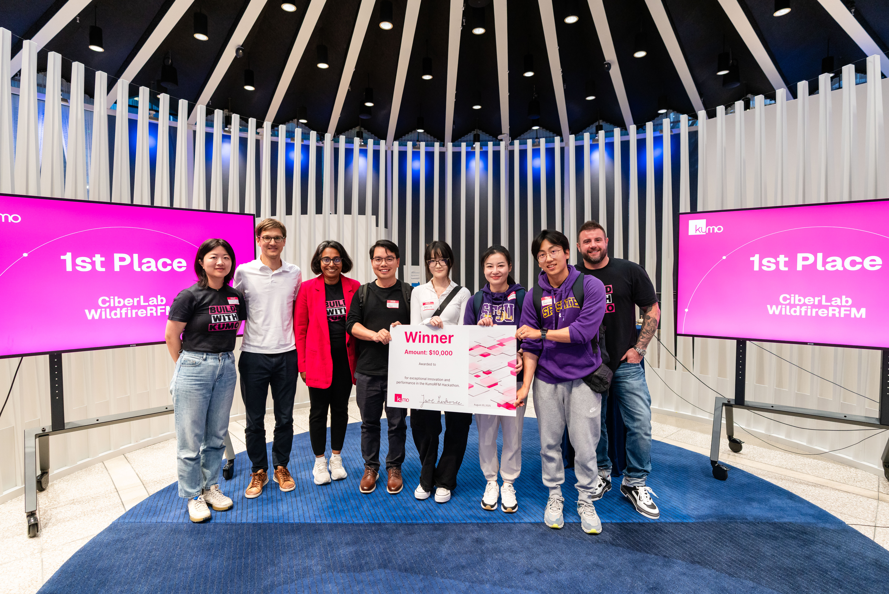

SFSU CIDER LAB
Research Overview
Cybersecurity and Intelligent Distributed Edge Research (CIDER) Lab focuses on advancing next-generation intelligent wireless communication, edge intelligence applications, and affordable AI solutions. Our research emphasizes efficiency and security improvements, aiming to develop robust, cutting-edge technologies for future communication systems. By leveraging federated learning, generative AI, GNNs, and large language models, we address key challenges in communication, security, and intelligent applications while ensuring scalability, privacy, and adaptability across diverse environments.

Research Areas
- Federated Learning with Multi-Party Computation (MPC): We are exploring federated learning frameworks integrated with multi-party computation to enhance privacy and data security. This research aims to enable decentralized learning while ensuring data confidentiality, particularly in scenarios where data privacy is paramount.
- Module-Based CNN for IRS-Assisted Spectrum Sensing: Our work focuses on using modular Convolutional Neural Networks (CNN) for Intelligent Reflecting Surface (IRS) assisted spectrum sensing in next-generation spectrum sharing networks. The goal is to improve spectrum sensing accuracy and efficiency, allowing better utilization of available spectrum resources in dynamic environments.
- Generative AI-Based IoT Attack Detection: We are investigating the use of generative AI techniques for detecting attacks in Internet of Things (IoT) environments. This research aims to enhance the security of IoT systems by identifying anomalous patterns and preventing malicious activities in real-time.
- GNN-Based Physical Layer Security with Power Allocation: We are developing Graph Neural Network (GNN) models to enhance physical layer security through efficient power allocation strategies. This work is focused on improving the robustness of wireless communication systems against eavesdropping and other security threats by optimizing power distribution.
- Vision Camera-Based Hand Tracking and Gesture Recognition: Our research includes the development of computer vision algorithms for real-time hand tracking and gesture recognition. This work aims to enable natural human-computer interaction, which has applications in smart environments and assistive technologies.
- Phishing URL and Phishing UI Detection: We are working on AI-based solutions for detecting phishing URLs and phishing user interfaces to enhance cybersecurity. By analyzing features of web pages and user interfaces, our models aim to detect and mitigate phishing attempts effectively.
- On-Device LLM-Based Recycle Bin Design: We are leveraging large language models (LLMs) to design an intelligent recycle bin that can operate on edge devices. The focus is on creating an efficient, context-aware solution that helps in sorting waste while maintaining privacy by performing computation locally.
- LLM-Based 3D Layout Design: Our research also extends to using LLMs for automated 3D layout design. This work is aimed at improving the efficiency and creativity of the design process, particularly for architectural and spatial planning applications.
News
2025
- I received a National Science Foundation (NSF) Collaborative Research CISE Core Small NeTS Grant on Intelligent Reflecting Surface Assisted Physical Layer Security Enhancement as lead PI, 3-year grant with $60,000 budget and collaborative with Dr. Haijian Sun from UGA and Dr. Hao Yue from UCSC.

Our CIDER Lab project WildfireRFM won the 1st prize in KumoRFM Hacton, congratulations to Binrongzhu, Guiran Liu, and Yang Liu.- I received a National Science Foundation (NSF) CRII project on spectrum sharing and sensing network. This is a single-PI, 2-year grant with $175,000 budget.
- Our research project has been selected for the Gilead Innovation Initiative 2025 Summer Research Award, with $5,000 allocated to Binrong Zhu and $5,000 to Yang Liu.
- Congratulations to Xu Gu for being selected as the 2025 SFSU Graduate Distinguished Achievement Award Recipient.
- Congratulations to Satvik Verma, Xu Gu, and Ruxue Jin on their graduation.
- Satvik Verma presented our research at AAAI 2025 Spring Symposium.
- Our research work: S. Verma, Q. Wang, E. W. Bethel, "Intelligent IoT Attack Detection via ODLLM," accepted by AAAI 2025 Spring Symposium.
- Our research work: W. Guo, Q. Wang, H. Yue, H. Sun, R. Q. Hu. (2025). Efficient Phishing URL Detection Using Graph-based Machine Learning and Loopy Belief Propagation. Accepted by IEEE ICC 2025.
- Our research work: Sicheng Liu, Qun Wang, Zhuwei Qin, Weishan Zhang, Jingyi Wang, and Xiang Ma, "IRS Assisted Decentralized Learning for Wideband Spectrum Sensing." Accepted by 2025 International Symposium on Intelligent Computing and Networking (ISICN 2025), Spring 2025. Sicheng Liu is a student from CSC 699.
- Our research work: David Chen, Qun Wang, Haijian Sun, and Yue Hao, "GNN Based PLS Enhancement for Next Generation Spectrum Sharing Industrial Networks," Accepted by 2025 International Symposium on Intelligent Computing and Networking (ISICN 2025), Spring 2025. David Chen is a student from CSC 895.
- Our paper: Qun Wang, Yingzhou Lu, Guiran Liu, Binrong Zhu, and Yang Liu, "LLM‑Assisted Alpha‑Fairness for 6 GHz Wi‑Fi/NR‑U Coexistence: An Agentic Orchestrator for Throughput, Energy, and SLA" has been accepted by IEEE IEMCON 2025 Conference (Graduate Research work).
- Our paper: Guiran Liu, Binrong Zhu, Yang Liu, and Qun Wang, "Design of a Cross-Layer AI Agent for Secure Spectrum-Aware Network Slicing" has been accepted by Chen Institute Symposium for AI Accelerated Science 2025 (Graduate Research work).
- I am accepted and invited to attend NSF NeTS Early Career Workshop 2025 at NSF with travel support.
2024
- Congratulations to Satvik Verma and Sicheng Liu for their student abstract accepted by IEEE DSAA'24 with travel support.
- Serve as a guest editor for the Special Issue "Cognitive Semantic Communications for 6G Wireless Networks", VSI: CSC-6GWN in Physical Communication (IF: 2.0).
- J. Xu, Q. Wang, Yuhang Cao, Baitao Zeng, Sicheng Liu. "A general-purpose device for interaction with LLMs." arXiv preprint arXiv:2408.10230. (Accepted by Future Technologies Conference (FTC) 2024, Sicheng Liu is a student from CSC 699)
- X. Ma, Q. Wang, H. Sun, R. Q. Hu and Y. Qian, "CSMAAFL: Client Scheduling and Model Aggregation in Asynchronous Federated Learning," ICC 2024 - IEEE International Conference on Communications, Denver, CO, USA, 2024, pp. 274-279.
- M. Xiang, Y. Zhou, H. Zhang, Q. Wang, H. Sun, H. Wang, and R. Q. Hu. "Exploring Communication Technologies, Standards, and Challenges in Electrified Vehicle Charging." arXiv preprint arXiv:2403.16830 (2024) (Accepted by IEEE Open Journal of the Communications Society, Impact Factor: 6.3).
- "Design Effective and Equitable Professional Learning for Middle School Computer Science Teachers", Co-PI, Awarded by NSF 23-596 Discovery Research PreK-1, Fall 2024.
2023
- "Intelligent Wireless Spectrum Monitoring with Decentralized On-device Learning," Co-Investigator, Co-PI, Awarded by SFSU RSCA Fund award, Spring 2023 (Internal Funding). Co-PI.
Lab Members
Current Graduate Students
- Yang Liu
- Guiran Liu
- Binrong Zhu
- Mekonnen Tesfamichael Tesfazien
- Shun Usami
- Rohith Gannoju
Current Undergraduate Students
- Phuong Mai Nguyen
- Edson Sanchez Bernal
- Alberto Mezzo
- Bohlander Ty J.
- Eugenio Ramirez
Previous Students
- Xu Gu — "GenAI based meeting assistant design," Fall 2024-Spring 2025
- Ruxue Jin — "LLM enhanced intelligent recycle bin design," Fall 2024-Spring 2025
- David Chen — "Deep Learning Based Secure Energy Efficiency Optimization For Wireless IoT Networks," Spring 2024-Fall 2024
- Jijeong Lee — "Stress Detector for College Students," Spring 2024-Present
- Parth Pareshkumar Desai — "Anonymized Peer Review Matcher," Spring 2024-Present
- Satvik Verma — "Generative AI-Based IoT Attack Detection," Fall 2024-Spring 2025
- Yasaman Pakdel — "Privacy preservation in federated learning algorithms," Spring 2024
- William Pan — "Intelligent photograph detection", Fall 2024
- Sicheng Liu — "American Sign Language Recognition with CNN and LLM," Spring 2024
- Krushna Thakkar — "Edge LLM and Machine Learning in Scientific Research Applications," Spring 2024
- Michael Petrossian — "Attack and Defense Methods for eCTF Embedded System," Spring 2024
- Ethan Hanlon — "Attack and Defense Methods for eCTF Embedded System," Spring 2024
- Vinh Ngo — "Machine Learning Enhanced Network Scanner," Spring 2024